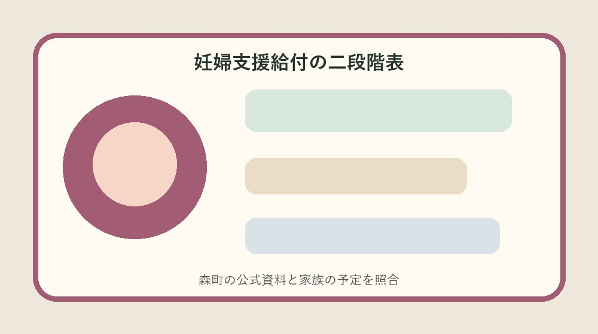
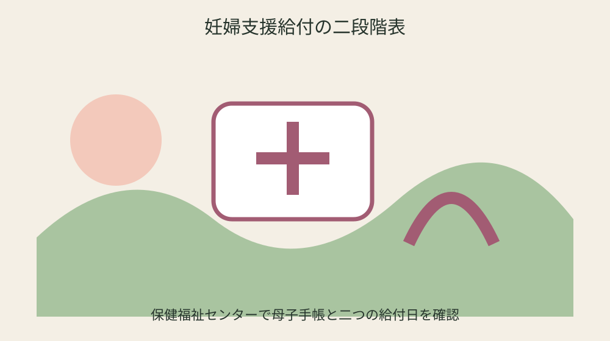
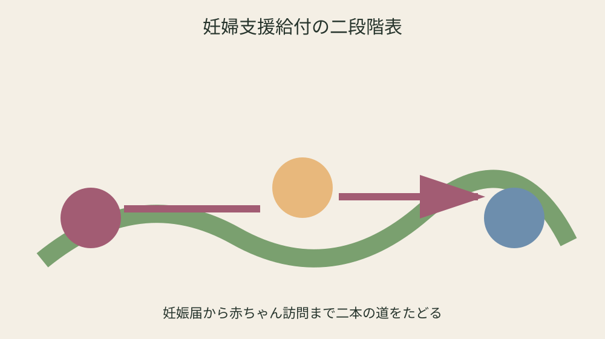

森町の妊婦支援給付｜妊娠時5万円と出産後の胎児数届を二段階で管理する

結論：妊婦支援給付二段階表へ対象、日付、手元資料、未確認事項を分け、最初の一問だけを森町へ確認します。
妊娠確認日と届出日を分ける
妊娠確認日と届出日を分けるでは、森町公式の「令和7年4月1日から妊婦支援給付と伴走型相談支援を一体実施」を起点にします。妊婦支援給付二段階表には日付、対象、手元資料、確認日を別欄で置き、制度名だけを写して終わらせません。妊娠・出産の経過は人ごとに異なるため、共通条件と自分の状況を同じ文章に混ぜず、二列で見比べます。
手元では「妊娠届出と妊婦給付認定申請が必要」も確認します。通知、母子健康手帳、領収書、受診票の原本は動かさず、写しへ番号を付けます。分からない欄は家族の記憶で埋めず、未確認の理由と次に尋ねる窓口を記すことが、妊婦支援給付二段階表を安全に使う条件です。
健康こども課へ相談するときは、妊娠確認日と届出日を分けるについて確認済みの一点と質問したい一点を分けて伝えます。「出産後は胎児1人あたり5万円」が個別にどう当てはまるか、回答日、担当、必要書類、次の期限まで書けば、同じ説明を最初から繰り返さずに済みます。
妊婦支援給付二段階表の旧版は消しません。「同一妊娠で他自治体の給付を受けていないこと」を採用した根拠、変更前の記録、更新日を残します。医療機関の受入条件や年度案内は変わり得るため、予約・支払・申請の直前には現在の公式案内を再確認してください。
1回目の認定申請を母子手帳交付と結ぶ
1回目の認定申請を母子手帳交付と結ぶでは、森町公式の「給付は妊娠時と出産後の2回」を起点にします。妊婦支援給付二段階表には日付、対象、手元資料、確認日を別欄で置き、制度名だけを写して終わらせません。妊娠・出産の経過は人ごとに異なるため、共通条件と自分の状況を同じ文章に混ぜず、二列で見比べます。
手元では「胎児心拍を医療機関等で確認した人が対象」も確認します。通知、母子健康手帳、領収書、受診票の原本は動かさず、写しへ番号を付けます。分からない欄は家族の記憶で埋めず、未確認の理由と次に尋ねる窓口を記すことが、妊婦支援給付二段階表を安全に使う条件です。
健康こども課へ相談するときは、1回目の認定申請を母子手帳交付と結ぶについて確認済みの一点と質問したい一点を分けて伝えます。「出産後は胎児数の届出が必要」が個別にどう当てはまるか、回答日、担当、必要書類、次の期限まで書けば、同じ説明を最初から繰り返さずに済みます。
妊婦支援給付二段階表の旧版は消しません。「流産・死産等を経験した人も申請可能」を採用した根拠、変更前の記録、更新日を残します。医療機関の受入条件や年度案内は変わり得るため、予約・支払・申請の直前には現在の公式案内を再確認してください。
妊婦名義の口座を準備する
妊婦名義の口座を準備するでは、森町公式の「妊娠時の給付額は5万円」を起点にします。妊婦支援給付二段階表には日付、対象、手元資料、確認日を別欄で置き、制度名だけを写して終わらせません。妊娠・出産の経過は人ごとに異なるため、共通条件と自分の状況を同じ文章に混ぜず、二列で見比べます。
手元では「振込先は妊婦名義の銀行口座」も確認します。通知、母子健康手帳、領収書、受診票の原本は動かさず、写しへ番号を付けます。分からない欄は家族の記憶で埋めず、未確認の理由と次に尋ねる窓口を記すことが、妊婦支援給付二段階表を安全に使う条件です。
健康こども課へ相談するときは、妊婦名義の口座を準備するについて確認済みの一点と質問したい一点を分けて伝えます。「出産後の申請は赤ちゃん訪問時に案内」が個別にどう当てはまるか、回答日、担当、必要書類、次の期限まで書けば、同じ説明を最初から繰り返さずに済みます。
妊婦支援給付二段階表の旧版は消しません。「妊娠届前の流産等は診断書等で妊娠事実を確認」を採用した根拠、変更前の記録、更新日を残します。医療機関の受入条件や年度案内は変わり得るため、予約・支払・申請の直前には現在の公式案内を再確認してください。
他自治体での受給有無を確認する
他自治体での受給有無を確認するでは、森町公式の「妊娠届出と妊婦給付認定申請が必要」を起点にします。妊婦支援給付二段階表には日付、対象、手元資料、確認日を別欄で置き、制度名だけを写して終わらせません。妊娠・出産の経過は人ごとに異なるため、共通条件と自分の状況を同じ文章に混ぜず、二列で見比べます。
手元では「出産後は胎児1人あたり5万円」も確認します。通知、母子健康手帳、領収書、受診票の原本は動かさず、写しへ番号を付けます。分からない欄は家族の記憶で埋めず、未確認の理由と次に尋ねる窓口を記すことが、妊婦支援給付二段階表を安全に使う条件です。
健康こども課へ相談するときは、他自治体での受給有無を確認するについて確認済みの一点と質問したい一点を分けて伝えます。「同一妊娠で他自治体の給付を受けていないこと」が個別にどう当てはまるか、回答日、担当、必要書類、次の期限まで書けば、同じ説明を最初から繰り返さずに済みます。
妊婦支援給付二段階表の旧版は消しません。「令和7年4月1日から妊婦支援給付と伴走型相談支援を一体実施」を採用した根拠、変更前の記録、更新日を残します。医療機関の受入条件や年度案内は変わり得るため、予約・支払・申請の直前には現在の公式案内を再確認してください。

妊娠後期アンケートを予定に入れる
妊娠後期アンケートを予定に入れるでは、森町公式の「胎児心拍を医療機関等で確認した人が対象」を起点にします。妊婦支援給付二段階表には日付、対象、手元資料、確認日を別欄で置き、制度名だけを写して終わらせません。妊娠・出産の経過は人ごとに異なるため、共通条件と自分の状況を同じ文章に混ぜず、二列で見比べます。
手元では「出産後は胎児数の届出が必要」も確認します。通知、母子健康手帳、領収書、受診票の原本は動かさず、写しへ番号を付けます。分からない欄は家族の記憶で埋めず、未確認の理由と次に尋ねる窓口を記すことが、妊婦支援給付二段階表を安全に使う条件です。
健康こども課へ相談するときは、妊娠後期アンケートを予定に入れるについて確認済みの一点と質問したい一点を分けて伝えます。「流産・死産等を経験した人も申請可能」が個別にどう当てはまるか、回答日、担当、必要書類、次の期限まで書けば、同じ説明を最初から繰り返さずに済みます。
妊婦支援給付二段階表の旧版は消しません。「給付は妊娠時と出産後の2回」を採用した根拠、変更前の記録、更新日を残します。医療機関の受入条件や年度案内は変わり得るため、予約・支払・申請の直前には現在の公式案内を再確認してください。
胎児数を出産後の届出へつなぐ
胎児数を出産後の届出へつなぐでは、森町公式の「振込先は妊婦名義の銀行口座」を起点にします。妊婦支援給付二段階表には日付、対象、手元資料、確認日を別欄で置き、制度名だけを写して終わらせません。妊娠・出産の経過は人ごとに異なるため、共通条件と自分の状況を同じ文章に混ぜず、二列で見比べます。
手元では「出産後の申請は赤ちゃん訪問時に案内」も確認します。通知、母子健康手帳、領収書、受診票の原本は動かさず、写しへ番号を付けます。分からない欄は家族の記憶で埋めず、未確認の理由と次に尋ねる窓口を記すことが、妊婦支援給付二段階表を安全に使う条件です。
健康こども課へ相談するときは、胎児数を出産後の届出へつなぐについて確認済みの一点と質問したい一点を分けて伝えます。「妊娠届前の流産等は診断書等で妊娠事実を確認」が個別にどう当てはまるか、回答日、担当、必要書類、次の期限まで書けば、同じ説明を最初から繰り返さずに済みます。
妊婦支援給付二段階表の旧版は消しません。「妊娠時の給付額は5万円」を採用した根拠、変更前の記録、更新日を残します。医療機関の受入条件や年度案内は変わり得るため、予約・支払・申請の直前には現在の公式案内を再確認してください。
赤ちゃん訪問と2回目申請を結ぶ
赤ちゃん訪問と2回目申請を結ぶでは、森町公式の「出産後は胎児1人あたり5万円」を起点にします。妊婦支援給付二段階表には日付、対象、手元資料、確認日を別欄で置き、制度名だけを写して終わらせません。妊娠・出産の経過は人ごとに異なるため、共通条件と自分の状況を同じ文章に混ぜず、二列で見比べます。
手元では「同一妊娠で他自治体の給付を受けていないこと」も確認します。通知、母子健康手帳、領収書、受診票の原本は動かさず、写しへ番号を付けます。分からない欄は家族の記憶で埋めず、未確認の理由と次に尋ねる窓口を記すことが、妊婦支援給付二段階表を安全に使う条件です。
健康こども課へ相談するときは、赤ちゃん訪問と2回目申請を結ぶについて確認済みの一点と質問したい一点を分けて伝えます。「令和7年4月1日から妊婦支援給付と伴走型相談支援を一体実施」が個別にどう当てはまるか、回答日、担当、必要書類、次の期限まで書けば、同じ説明を最初から繰り返さずに済みます。
妊婦支援給付二段階表の旧版は消しません。「妊娠届出と妊婦給付認定申請が必要」を採用した根拠、変更前の記録、更新日を残します。医療機関の受入条件や年度案内は変わり得るため、予約・支払・申請の直前には現在の公式案内を再確認してください。
流産・死産時の確認資料を分ける
流産・死産時の確認資料を分けるでは、森町公式の「出産後は胎児数の届出が必要」を起点にします。妊婦支援給付二段階表には日付、対象、手元資料、確認日を別欄で置き、制度名だけを写して終わらせません。妊娠・出産の経過は人ごとに異なるため、共通条件と自分の状況を同じ文章に混ぜず、二列で見比べます。
手元では「流産・死産等を経験した人も申請可能」も確認します。通知、母子健康手帳、領収書、受診票の原本は動かさず、写しへ番号を付けます。分からない欄は家族の記憶で埋めず、未確認の理由と次に尋ねる窓口を記すことが、妊婦支援給付二段階表を安全に使う条件です。
健康こども課へ相談するときは、流産・死産時の確認資料を分けるについて確認済みの一点と質問したい一点を分けて伝えます。「給付は妊娠時と出産後の2回」が個別にどう当てはまるか、回答日、担当、必要書類、次の期限まで書けば、同じ説明を最初から繰り返さずに済みます。
妊婦支援給付二段階表の旧版は消しません。「胎児心拍を医療機関等で確認した人が対象」を採用した根拠、変更前の記録、更新日を残します。医療機関の受入条件や年度案内は変わり得るため、予約・支払・申請の直前には現在の公式案内を再確認してください。

家族が代理で断定しない
家族が代理で断定しないでは、森町公式の「出産後の申請は赤ちゃん訪問時に案内」を起点にします。妊婦支援給付二段階表には日付、対象、手元資料、確認日を別欄で置き、制度名だけを写して終わらせません。妊娠・出産の経過は人ごとに異なるため、共通条件と自分の状況を同じ文章に混ぜず、二列で見比べます。
手元では「妊娠届前の流産等は診断書等で妊娠事実を確認」も確認します。通知、母子健康手帳、領収書、受診票の原本は動かさず、写しへ番号を付けます。分からない欄は家族の記憶で埋めず、未確認の理由と次に尋ねる窓口を記すことが、妊婦支援給付二段階表を安全に使う条件です。
健康こども課へ相談するときは、家族が代理で断定しないについて確認済みの一点と質問したい一点を分けて伝えます。「妊娠時の給付額は5万円」が個別にどう当てはまるか、回答日、担当、必要書類、次の期限まで書けば、同じ説明を最初から繰り返さずに済みます。
妊婦支援給付二段階表の旧版は消しません。「振込先は妊婦名義の銀行口座」を採用した根拠、変更前の記録、更新日を残します。医療機関の受入条件や年度案内は変わり得るため、予約・支払・申請の直前には現在の公式案内を再確認してください。
2回の振込と控えを一緒に保管する
2回の振込と控えを一緒に保管するでは、森町公式の「同一妊娠で他自治体の給付を受けていないこと」を起点にします。妊婦支援給付二段階表には日付、対象、手元資料、確認日を別欄で置き、制度名だけを写して終わらせません。妊娠・出産の経過は人ごとに異なるため、共通条件と自分の状況を同じ文章に混ぜず、二列で見比べます。
手元では「令和7年4月1日から妊婦支援給付と伴走型相談支援を一体実施」も確認します。通知、母子健康手帳、領収書、受診票の原本は動かさず、写しへ番号を付けます。分からない欄は家族の記憶で埋めず、未確認の理由と次に尋ねる窓口を記すことが、妊婦支援給付二段階表を安全に使う条件です。
健康こども課へ相談するときは、2回の振込と控えを一緒に保管するについて確認済みの一点と質問したい一点を分けて伝えます。「妊娠届出と妊婦給付認定申請が必要」が個別にどう当てはまるか、回答日、担当、必要書類、次の期限まで書けば、同じ説明を最初から繰り返さずに済みます。
妊婦支援給付二段階表の旧版は消しません。「出産後は胎児1人あたり5万円」を採用した根拠、変更前の記録、更新日を残します。医療機関の受入条件や年度案内は変わり得るため、予約・支払・申請の直前には現在の公式案内を再確認してください。
良い点
妊婦支援給付二段階表で制度条件と個別事情を分けると、次に確認すべき一問が見えます。
給付は妊娠時と出産後の2回という具体条件を家族で共有でき、担当が替わっても根拠をたどれます。
妊婦支援給付の二段階表に期限と原本の場所を集めれば、書類の取り直しを減らせます。
妊婦支援給付二段階表で未確認を未確認のまま残せることも、安全上の利点です。
注文したい点
妊婦支援給付の二段階表に関する森町の案内は制度条件が詳しい一方、初めての人には申請順序が読み取りにくい部分があります。
妊娠時の給付額は5万円に関係する施設や医療機関の条件を同じ画面で比較できると、電話確認がさらに少なくなります。
妊婦支援給付二段階表で使う年度案内は、更新時に変更箇所と変更日が目立つと旧資料との取り違えを防げます。
妊婦支援給付の二段階表の現行制度を否定するのではなく、一度で正しい窓口へ届くための改善要望です。
対案・結論
結論は妊婦支援給付二段階表を今日一枚作り、未確認欄を一つだけ相談することです。
妊婦支援給付二段階表には公式事実、手元資料、窓口回答、次の期限を四列で置きます。
胎児心拍を医療機関等で確認した人が対象を確認しても個別可否は異なるため、妊婦支援給付の二段階表を使う直前に再確認します。
妊婦支援給付二段階表の旧版を残し、家族が同じ根拠から続けられる状態を完成とします。
家族に残す記録
妊婦支援給付の二段階表に使う母子健康手帳や領収書の原本保管場所、確認日、次の予定を家族へ伝えます。
妊婦支援給付二段階表に医療情報を書く場合は共有相手と範囲を決め、外部提出版に不要な情報を載せません。
妊婦支援給付の二段階表の連絡先だけでなく、どの条件を何のために尋ねるかも一文で残します。
妊婦支援給付二段階表では申請控えと入金・利用結果を同じ番号で結びます。
大石の視点
ここまでの妊婦支援給付の二段階表の制度条件は森町公式資料から確認した事実です。以下は私、大石浩之の実務提案であり、森町の公式見解ではありません。
私は妊婦支援給付二段階表を紙一枚から始め、原本を動かさず写しへ番号を付ける方法を勧めます。
妊婦支援給付の二段階表の利用が未定でも、住所、名義、連絡先、期限を整理するだけで家族の負担は軽くなります。
妊婦支援給付二段階表の未確認欄は失敗ではなく、根拠のない断定を避けるための大切な記録です。
まとめ
妊婦支援給付二段階表は、すべてを一度で決めるためではなく、次の確認を安全にする表です。
最初は「令和7年4月1日から妊婦支援給付と伴走型相談支援を一体実施」と手元資料を照合してください。
妊婦支援給付の二段階表に不足があれば確認先と期限を残し、予約や支払の前に最新案内を見ます。
妊婦支援給付二段階表を家族へ渡すときは原本場所と次の担当を添えてください。
よくある質問
妊婦支援給付二段階表は何から始めますか。
対象、基準日、手元資料を一行にし、「令和7年4月1日から妊婦支援給付と伴走型相談支援を一体実施」と照合します。
資料が足りなくても作れますか。
作れます。不足欄を推測で埋めず、必要資料、確認先、期限を記します。
一度確認すれば再確認は不要ですか。
不要ではありません。予約、支払、申請の直前に現行案内を確認します。
家族へ何を渡しますか。
確認済み事実、未確認事項、次の担当、期限、原本保管場所を渡します。
公式情報源
- 妊婦のための支援給付（2026年8月26日確認）
- 妊娠したら（相談・支援等）（2026年8月26日確認）
最終確認日：2026-08-26